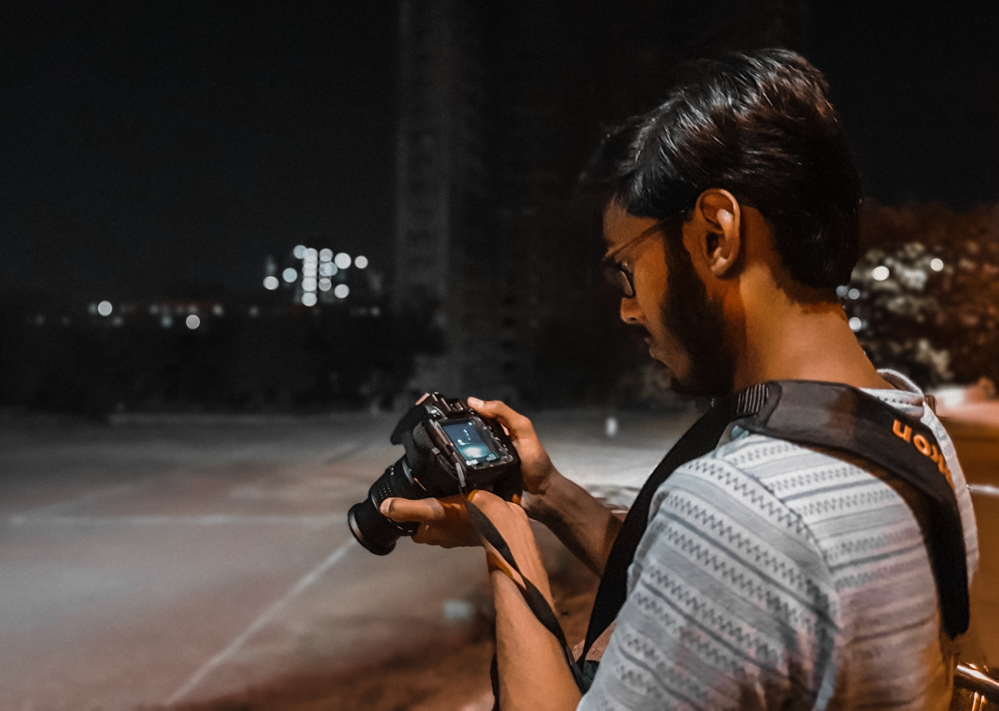
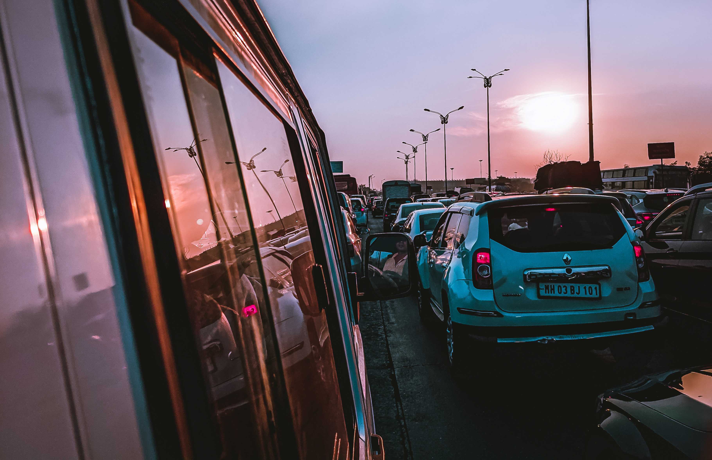

Hello, Welcome to my journey. I am a 21-year-old research analyst by profession and a photographer by passion-based out of Mumbai, India. Photography has always topped my list of hobbies and will always continue to do so. However, it was not until 2020 when I got myself a good camera phone, as I love shooting and capturing pictures on my phone. I’m new to this field and a few years back my knowledge about a good photo was poor. But as each day passes by, I have developed new skills and approach towards capturing and post-processing a photo.
Although I do own a professional camera, I love capturing moments on my smartphone and my gallery can guide you to some of the best photographs I have clicked over the years. I find joy capturing whatever is happening in my surroundings and how I see this world full of colors. Please feel free to contact me by filling up the form.
